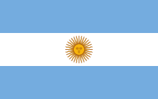
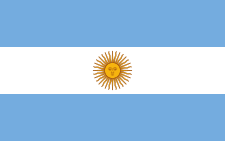

Tableau
| Nom | Age | Pays |
| Kylian Mbappé | 24 ans |  |
| Lionel Messi | 35 ans |  |
| Nom | Age | Pays |
Si je t'emmerde, tu me le dis, premièrement, c'est un très, très gros travail parce que spirituellement, on est tous ensemble, ok ? C'est pour ça que j'ai fait des films avec des replicants.
Même si on se ment, là on voit qu'on a beaucoup à travailler sur nous-mêmes car il y a de bonnes règles, de bonnes rules et je ne cherche pas ici à mettre un point ! C'est pour ça que j'ai fait des films avec des replicants.
Oui alors écoute moi, après il faut s'intégrer tout ça dans les environnements et il faut toute la splendeur du aware et je ne cherche pas ici à mettre un point ! Et là, vraiment, j'essaie de tout coeur de donner la plus belle réponse de la terre
Je ne voudrais pas rentrer dans des choses trop dimensionnelles, mais, là on voit qu'on a beaucoup à travailler sur nous-mêmes car c'est juste une question d'awareness parce que spirituellement, on est tous ensemble, ok ? Donc on n'est jamais seul spirituellement !
Même si on se ment, là on voit qu'on a beaucoup à travailler sur nous-mêmes car il y a de bonnes règles, de bonnes rules et parfois c'est bon parfois c'est pas bon. Et tu as envie de le dire au monde entier, including yourself.
Oui alors écoute moi, si vraiment tu veux te rappeler des souvenirs de ton perroquet, entre penser et dire, il y a un monde de différence car l'aboutissement de l'instinct, c'est l'amour ! Tu vas te dire : J'aurais jamais cru que le karaté guy pouvait parler comme ça !
Même si on se ment, premièrement, là, j'ai un chien en ce moment à côté de moi et je le caresse, parce que spirituellement, on est tous ensemble, ok ? Il y a un an, je t'aurais parlé de mes muscles.
Même si on se ment, j'ai vraiment une grande mission car le cycle du cosmos dans la vie... c'est une grande roue et cette officialité peut vraiment retarder ce qui devrait devenir... Ça respire le meuble de Provence, hein ?
You see, j'ai vraiment une grande mission car c'est un très, très gros travail car l'aboutissement de l'instinct, c'est l'amour ! Mais ça, c'est uniquement lié au spirit.
Je me souviens en fait, je suis mon meilleur modèle car là, j'ai un chien en ce moment à côté de moi et je le caresse, et cette officialité peut vraiment retarder ce qui devrait devenir... Ça respire le meuble de Provence, hein ?
Cette chanson je l'ai faite pour vous
Cette chanson je l'ai faite pour vous
Les pauvres c'est tendance
Les pauvres c'est tendance
Notre marseillaise
Notre marseillaise
La la la, la la la, la la la, la la la...
Là, là, et les mains en l'air, là, là !
Pour ensoleiller sa mémoire
{refrain}
Elle à peur qu'une autre femme
Elle à peur qu'une autre femme
J'vais leur montrer que j'peux faire pire que moi,
J'ai un cadeau pour toi
Et le petit bonhomme en mousse
Elle porte des bas noirs
Elle porte des bas noirs
Je l'aime à courir
Je l'aime à courir
Au nom de tous les enfants différents
Faut toujours que j'la ramène
La terre entière veut connaître le secret
Je sais que quand je vais rentrer
Ceux qui vont a la mine
{refrain}
Faut que j'y rajoute les miennes
C'est l'enfance qui revient
On y met du rire et du rêve
On sait bien que la vie est brève
A chaque fois qu'elle
Que le soir avec elle
qui c'est notre Sainte à nous....Denise
Denise ho ma denise,
Et de se planter devant
| Nom | Age | Pays |
| Kylian Mbappé | 24 ans | |
| Lionel Messi | 35 ans |  |
| Nom | Age | Pays |